原文连接:https://www.cnblogs.com/Java3y/p/11880377.html
前言
只有光头才能变强。
文本已收录至我的GitHub仓库，欢迎Star：https://github.com/ZhongFuCheng3y/3y
本文知识点架构：
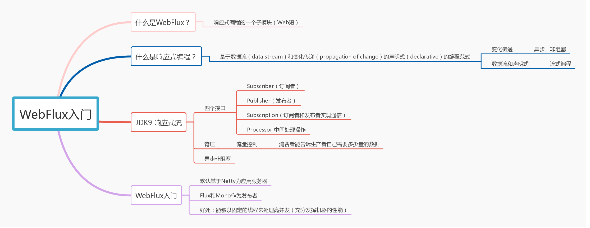
如果有关注我公众号文章的同学就会发现，最近我不定时转发了一些比较好的WebFlux的文章，因为我最近在学。
我之前也说过，学习一项技术之前，先要了解为什么要学这项技术。其实这次学习WebFlux也没有多大的原生动力，主要是在我们组内会轮流做一次技术分享，而我又不知道分享什么比较好...
之前在初学大数据相关的知识，但是这一块的时间线会拉得比较长，感觉赶不及小组内分享（而组内的同学又大部分都懂大数据，就只有我一个菜鸡，泪目)。所以，想的是：“要不我学点新东西搞搞？”。于是就花了点时间学WebFlux啦~
这篇文章主要讲解什么是WebFlux，带领大家入个门，希望对大家有所帮助（至少看完这篇文章，知道WebFlux是干嘛用的)
一、什么是WebFlux？
我们从Spring的官网拉下一点点就可以看到介绍WebFlux的地方了
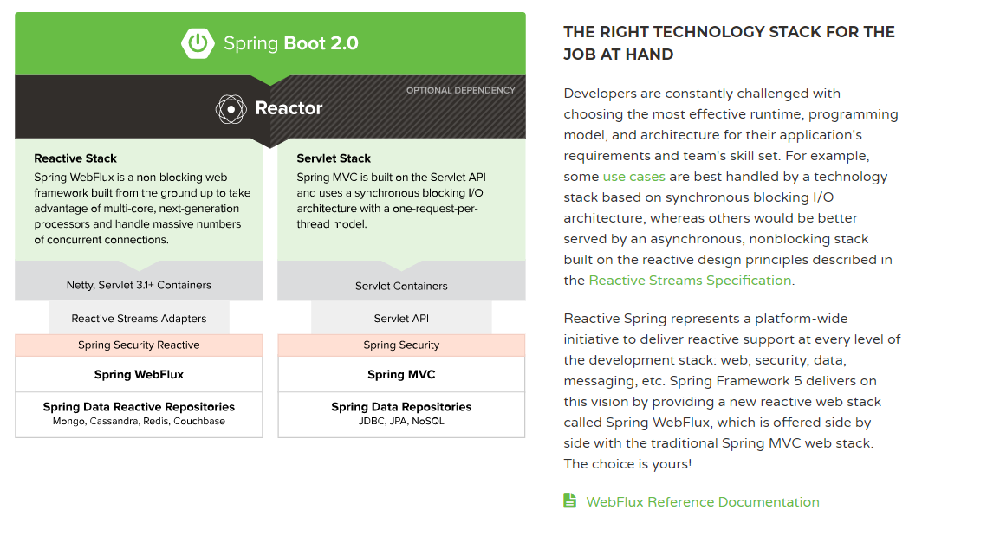
从官网的简介中我们能得出什么样的信息？
- 我们程序员往往根据不同的应用场景选择不同的技术，有的场景适合用于同步阻塞的，有的场景适合用于异步非阻塞的。而
Spring5提供了一整套响应式(非阻塞)的技术栈供我们使用(包括Web控制器、权限控制、数据访问层等等)。 - 而左侧的图则是技术栈的对比啦；
- 响应式一般用Netty或者Servlet 3.1的容器(因为支持异步非阻塞)，而Servlet技术栈用的是Servlet容器
- 在Web端，响应式用的是WebFlux，Servlet用的是SpringMVC
- .....
总结起来，WebFlux只是响应式编程中的一部分(在Web控制端)，所以一般我们用它与SpringMVC来对比。
二、如何理解响应式编程？
在上面提到了响应式编程(Reactive Programming)，而WebFlux只是响应式编程的其中一个技术栈而已，所以我们先来探讨一下什么是响应式编程
从维基百科里边我们得到的定义：
reactive programming is a declarative programming paradigm concerned with data streams and the propagation of change
响应式编程（reactive programming）是一种基于数据流（data stream）和变化传递（propagation of change）的声明式（declarative）的编程范式
在维基百科上也举了个小例子：
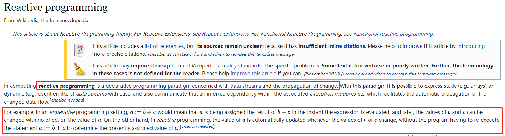
意思大概如下：
- 在命令式编程(我们的日常编程模式)下，式子
a=b+c，这就意味着a的值是由b和c计算出来的。如果b或者c后续有变化，不会影响到a的值 - 在响应式编程下，式子
a:=b+c，这就意味着a的值是由b和c计算出来的。但如果b或者c的值后续有变化，会影响到a的值
我认为上面的例子已经可以帮助我们理解变化传递（propagation of change）
那数据流（data stream）和声明式（declarative）怎么理解呢？那可以提一提我们的Stream流了。之前写过Lambda表达式和Stream流的文章，大家可以先去看看：
Lambda的语法是这样的(Stream流的使用会涉及到很多Lambda表达式的东西，所以一般先学Lambda再学Stream流)：
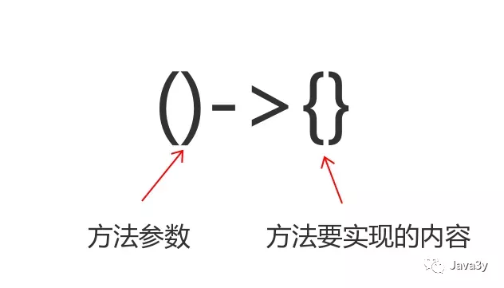
Stream流的使用分为三个步骤(创建Stream流、执行中间操作、执行最终操作)：
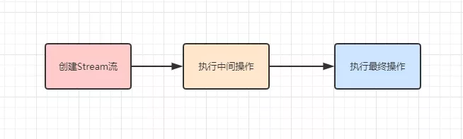
执行中间操作实际上就是给我们提供了很多的API去操作Stream流中的数据(求和/去重/过滤)等等
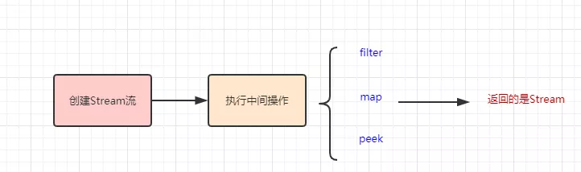
说了这么多，怎么理解数据流和声明式呢？其实是这样的：
- 本来数据是我们自行处理的，后来我们把要处理的数据抽象出来（变成了数据流），然后通过API去处理数据流中的数据（是声明式的）
比如下面的代码；将数组中的数据变成数据流，通过显式声明调用.sum()来处理数据流中的数据，得到最终的结果：
public static void main(String[] args) {
int[] nums = { 1, 2, 3 };
int sum2 = IntStream.of(nums).parallel().sum();
System.out.println("结果为：" + sum2);
}如图下所示：
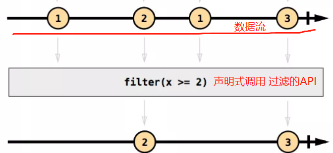
2.1 响应式编程->异步非阻塞
上面讲了响应式编程是什么：
响应式编程（reactive programming）是一种基于数据流（data stream）和变化传递（propagation of change）的声明式（declarative）的编程范式
也讲解了数据流/变化传递/声明式是什么意思，但说到响应式编程就离不开异步非阻塞。
从Spring官网介绍WebFlux的信息我们就可以发现asynchronous, nonblocking 这样的字样，因为响应式编程它是异步的，也可以理解成变化传递它是异步执行的。
如下图，合计的金额会受其他的金额影响(更新的过程是异步的)：
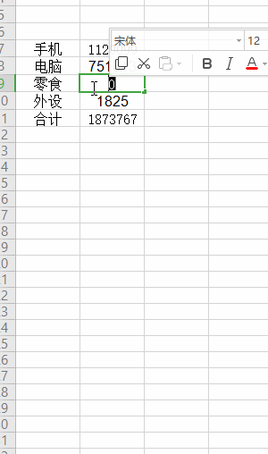
我们的JDK8 Stream流是同步的，它就不适合用于响应式编程（但基础的用法是需要懂的，因为响应式流编程都是操作流嘛）
而在JDK9 已经支持响应式流了，下面我们来看一下
三、JDK9 Reactive
响应式流的规范早已经被提出了：里面提到了：
Reactive Streams is an initiative to provide a standard for asynchronous stream processing with non-blocking back pressure ----->http://www.reactive-streams.org/
翻译再加点信息：
响应式流(Reactive Streams)通过定义一组实体，接口和互操作方法，给出了实现异步非阻塞背压的标准。第三方遵循这个标准来实现具体的解决方案，常见的有Reactor，RxJava，Akka Streams，Ratpack等。
规范里头实际上就是定义了四个接口：
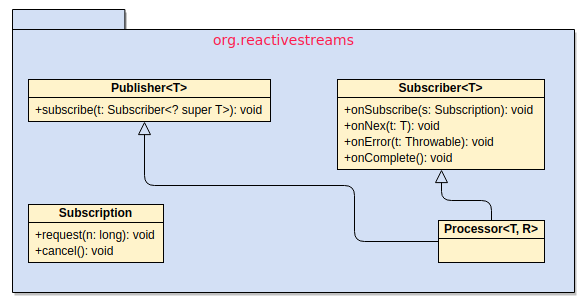
Java 平台直到 JDK 9才提供了对于Reactive的完整支持，JDK9也定义了上述提到的四个接口，在java.util.concurrent包上
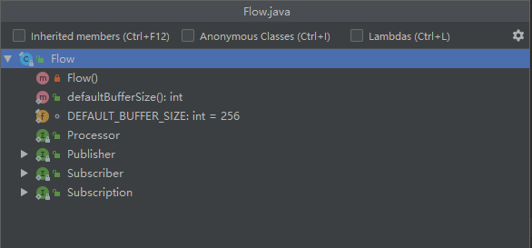
一个通用的流处理架构一般会是这样的（生产者产生数据，对数据进行中间处理，消费者拿到数据消费)：
- 数据来源，一般称为生产者（Producer）
- 数据的目的地，一般称为消费者(Consumer)
- 在处理时，对数据执行某些操作一个或多个处理阶段。（Processor)
到这里我们再看回响应式流的接口，我们应该就能懂了：
- Publisher（发布者)相当于生产者(Producer)
- Subscriber(订阅者)相当于消费者(Consumer)
- Processor就是在发布者与订阅者之间处理数据用的
在响应式流上提到了back pressure（背压)这么一个概念，其实非常好理解。在响应式流实现异步非阻塞是基于生产者和消费者模式的，而生产者消费者很容易出现的一个问题就是：生产者生产数据多了，就把消费者给压垮了。
而背压说白了就是：消费者能告诉生产者自己需要多少量的数据。这里就是Subscription接口所做的事。
下面我们来看看JDK9接口的方法，或许就更加能理解上面所说的话了：
// 发布者(生产者)
public interface Publisher<T> {
public void subscribe(Subscriber<? super T> s);
}
// 订阅者(消费者)
public interface Subscriber<T> {
public void onSubscribe(Subscription s);
public void onNext(T t);
public void onError(Throwable t);
public void onComplete();
}
// 用于发布者与订阅者之间的通信(实现背压：订阅者能够告诉生产者需要多少数据)
public interface Subscription {
public void request(long n);
public void cancel();
}
// 用于处理发布者 发布消息后，对消息进行处理，再交由消费者消费
public interface Processor<T,R> extends Subscriber<T>, Publisher<R> {
}3.1 看个例子
代码中有大量的注释，我就不多BB了，建议直接复制跑一下看看：
class MyProcessor extends SubmissionPublisher<String>
implements Processor<Integer, String> {
private Subscription subscription;
@Override
public void onSubscribe(Subscription subscription) {
// 保存订阅关系, 需要用它来给发布者响应
this.subscription = subscription;
// 请求一个数据
this.subscription.request(1);
}
@Override
public void onNext(Integer item) {
// 接受到一个数据, 处理
System.out.println("处理器接受到数据: " + item);
// 过滤掉小于0的, 然后发布出去
if (item > 0) {
this.submit("转换后的数据:" + item);
}
// 处理完调用request再请求一个数据
this.subscription.request(1);
// 或者 已经达到了目标, 调用cancel告诉发布者不再接受数据了
// this.subscription.cancel();
}
@Override
public void onError(Throwable throwable) {
// 出现了异常(例如处理数据的时候产生了异常)
throwable.printStackTrace();
// 我们可以告诉发布者, 后面不接受数据了
this.subscription.cancel();
}
@Override
public void onComplete() {
// 全部数据处理完了(发布者关闭了)
System.out.println("处理器处理完了!");
// 关闭发布者
this.close();
}
}
public class FlowDemo2 {
public static void main(String[] args) throws Exception {
// 1. 定义发布者, 发布的数据类型是 Integer
// 直接使用jdk自带的SubmissionPublisher
SubmissionPublisher<Integer> publiser = new SubmissionPublisher<Integer>();
// 2. 定义处理器, 对数据进行过滤, 并转换为String类型
MyProcessor processor = new MyProcessor();
// 3. 发布者 和 处理器 建立订阅关系
publiser.subscribe(processor);
// 4. 定义最终订阅者, 消费 String 类型数据
Subscriber<String> subscriber = new Subscriber<String>() {
private Subscription subscription;
@Override
public void onSubscribe(Subscription subscription) {
// 保存订阅关系, 需要用它来给发布者响应
this.subscription = subscription;
// 请求一个数据
this.subscription.request(1);
}
@Override
public void onNext(String item) {
// 接受到一个数据, 处理
System.out.println("接受到数据: " + item);
// 处理完调用request再请求一个数据
this.subscription.request(1);
// 或者 已经达到了目标, 调用cancel告诉发布者不再接受数据了
// this.subscription.cancel();
}
@Override
public void onError(Throwable throwable) {
// 出现了异常(例如处理数据的时候产生了异常)
throwable.printStackTrace();
// 我们可以告诉发布者, 后面不接受数据了
this.subscription.cancel();
}
@Override
public void onComplete() {
// 全部数据处理完了(发布者关闭了)
System.out.println("处理完了!");
}
};
// 5. 处理器 和 最终订阅者 建立订阅关系
processor.subscribe(subscriber);
// 6. 生产数据, 并发布
publiser.submit(-111);
publiser.submit(111);
// 7. 结束后 关闭发布者
// 正式环境 应该放 finally 或者使用 try-resouce 确保关闭
publiser.close();
// 主线程延迟停止, 否则数据没有消费就退出
Thread.currentThread().join(1000);
}
}
输出的结果如下：
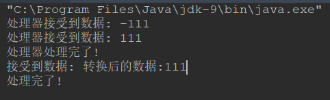
流程实际上非常简单的：
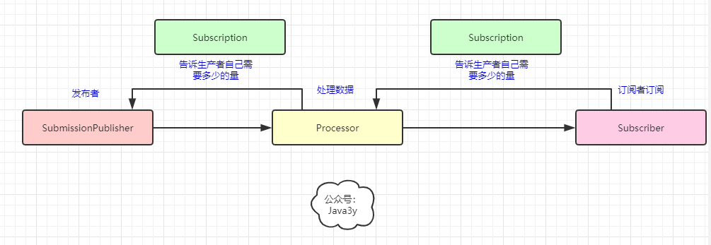
参考资料：
- https://yanbin.blog/java-9-talk-reactive-stream/#more-8877
- https://blog.csdn.net/wudaoshihun/article/details/83070086
- http://www.spring4all.com/article/6826
- https://www.cnblogs.com/IcanFixIt/p/7245377.html
Java 8 的 Stream 主要关注在流的过滤，映射，合并，而 Reactive Stream 更进一层，侧重的是流的产生与消费，即流在生产与消费者之间的协调
说白了就是：响应式流是异步非阻塞+流量控制的(可以告诉生产者自己需要多少的量/取消订阅关系)
展望响应式编程的场景应用：
比如一个日志监控系统，我们的前端页面将不再需要通过“命令式”的轮询的方式不断向服务器请求数据然后进行更新，而是在建立好通道之后，数据流从系统源源不断流向页面，从而展现实时的指标变化曲线；
再比如一个社交平台，朋友的动态、点赞和留言不是手动刷出来的，而是当后台数据变化的时候自动体现到界面上的。
四、入门WebFlux
扯了一大堆，终于回到WebFlux了。经过上面的基础，我们现在已经能够得出一些结论的了：
- WebFlux是Spring推出响应式编程的一部分(web端)
- 响应式编程是异步非阻塞的(是一种基于数据流（data stream）和变化传递（propagation of change）的声明式（declarative）的编程范式)
我们再回来看官网的图：
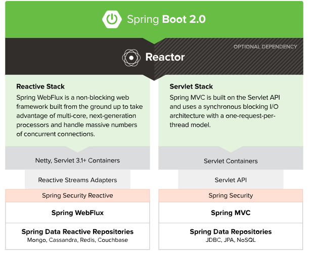
4.1 简单体验WebFlux
Spring官方为了让我们更加快速/平滑到WebFlux上，之前SpringMVC那套都是支持的。也就是说：我们可以像使用SpringMVC一样使用着WebFlux。
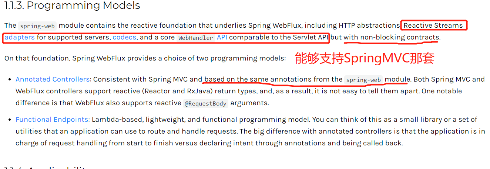
WebFlux使用的响应式流并不是用JDK9平台的，而是一个叫做Reactor响应式流库。所以，入门WebFlux其实更多是了解怎么使用Reactor的API，下面我们来看看~
Reactor是一个响应式流，它也有对应的发布者(Publisher )，Reactor的发布者用两个类来表示：
- Mono(返回0或1个元素)
- Flux(返回0-n个元素)
而订阅者则是Spring框架去完成
下面我们来看一个简单的例子(基于WebFlux环境构建)：
// 阻塞5秒钟
private String createStr() {
try {
TimeUnit.SECONDS.sleep(5);
} catch (InterruptedException e) {
}
return "some string";
}
// 普通的SpringMVC方法
@GetMapping("/1")
private String get1() {
log.info("get1 start");
String result = createStr();
log.info("get1 end.");
return result;
}
// WebFlux(返回的是Mono)
@GetMapping("/2")
private Mono<String> get2() {
log.info("get2 start");
Mono<String> result = Mono.fromSupplier(() -> createStr());
log.info("get2 end.");
return result;
}首先，值得说明的是，我们构建WebFlux环境启动时，应用服务器默认是Netty的：
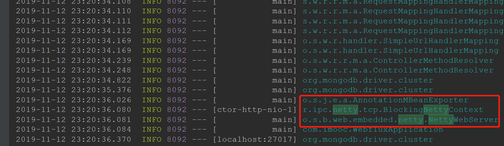
我们分别来访问一下SpringMVC的接口和WebFlux的接口，看一下有什么区别：
SpringMVC：
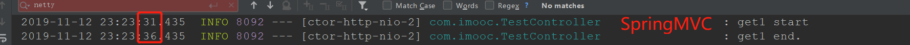
WebFlux：
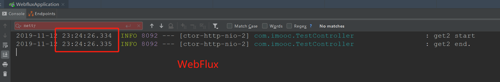
从调用者(浏览器)的角度而言，是感知不到有什么变化的，因为都是得等待5s才返回数据。但是，从服务端的日志我们可以看出，WebFlux是直接返回Mono对象的(而不是像SpringMVC一直同步阻塞5s，线程才返回)。
这正是WebFlux的好处：能够以固定的线程来处理高并发（充分发挥机器的性能）。
WebFlux还支持服务器推送(SSE - >Server Send Event)，我们来看个例子：
/**
* Flux : 返回0-n个元素
* 注：需要指定MediaType
* @return
*/
@GetMapping(value = "/3", produces = MediaType.TEXT_EVENT_STREAM_VALUE)
private Flux<String> flux() {
Flux<String> result = Flux
.fromStream(IntStream.range(1, 5).mapToObj(i -> {
try {
TimeUnit.SECONDS.sleep(1);
} catch (InterruptedException e) {
}
return "flux data--" + i;
}));
return result;
}效果就是每秒会给浏览器推送数据：
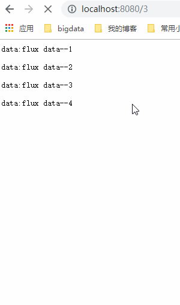
非常感谢人才们能看到这里，如果这个文章写得还不错，觉得「三歪」我有点东西的话 求点赞 求关注️ 求分享👥 求留言💬 对暖男我来说真的 非常有用！！！
WebFlux我还没写完，这篇写了WebFlux支持SpringMVC那套注解来开发，下篇写写如何使用WebFlux另一种模式(Functional Endpoints)来开发以及一些常见的问题还需要补充一下~
本已收录至我的GitHub精选文章，欢迎Star：https://github.com/ZhongFuCheng3y/3y
乐于输出干货的Java技术公众号：Java3y。公众号内有300多篇原创技术文章、海量视频资源、精美脑图，关注即可获取！

创作不易，各位的支持和认可，就是我创作的最大动力，我们下篇文章见！ 求点赞 求关注️ 求分享👥 求留言💬